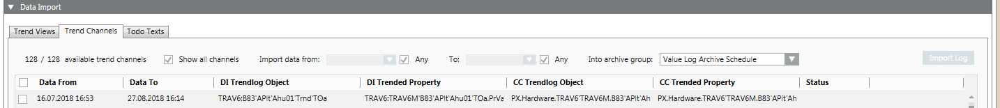

Migrate Trend Channels

- In the Data import expander, select the Trend channels tab.
- Enter the following migration information:
a. Select the Display all channels check box.
b. Select one or more trend channels and select the check box.
c. In the Data from field, enter the start date.
d. In the Data To field, enter the end data.
e. In the In archive group drop-down list, select the archive group. By default the data in the archive group Value Log Archive Schedule is imported.
NOTE: Use the tooltip at columns DI Trendlog Object, DI Trended Property, CC Trendlog Object and CC Trended Property to learn more about trend data. - Perform an import.
- The data is saved to an offline trendlog object after import.
- Double-click the data point in the CC Trended Property column.
- The data point is selected in System Browser.
- Select the Related items tab and then Trend.
- Click the corresponding trend label.
- The trend data is displayed in the secondary pane.
Possible errors:
- Trendlog object is incorrect
- Check is not possible
- No assignment available, channels with no check boxes are not assigned to a Desigo CC channel.

NOTE:
The file displayed in the log is saved as DIMigrationTrendDataLog.csv in folder [Installation Drive]:\[Installation Folder]\[Project Name]\log and can be opened in Excel. The separators for the CSV file are based on the set Desigo CC language.
If the log file is opened in Excel, the data migration once again aborts. Close the log file first and restart the data migration.